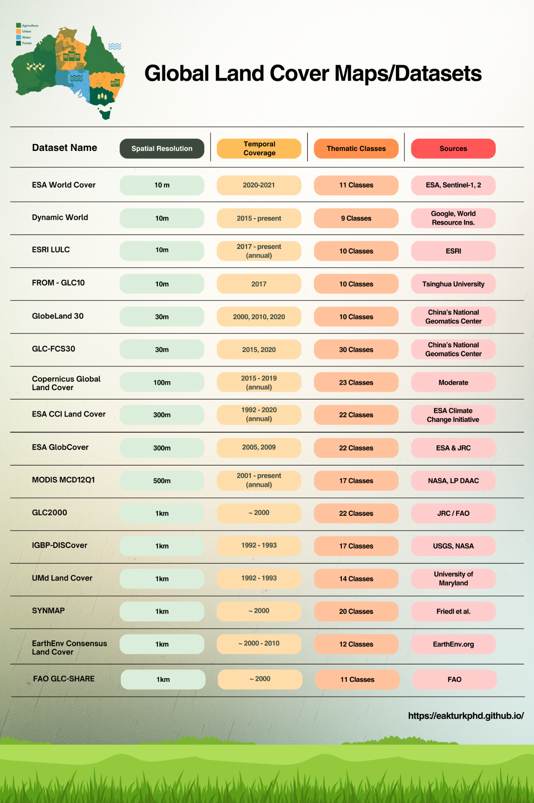

12 May 2026
Global Land Cover Datasets: Reading the Planet Pixel by Pixel
How satellite observations, classification algorithms and global data infrastructures help us understand where forests, croplands, wetlands, water bodies and settlements are—and how they change over time.